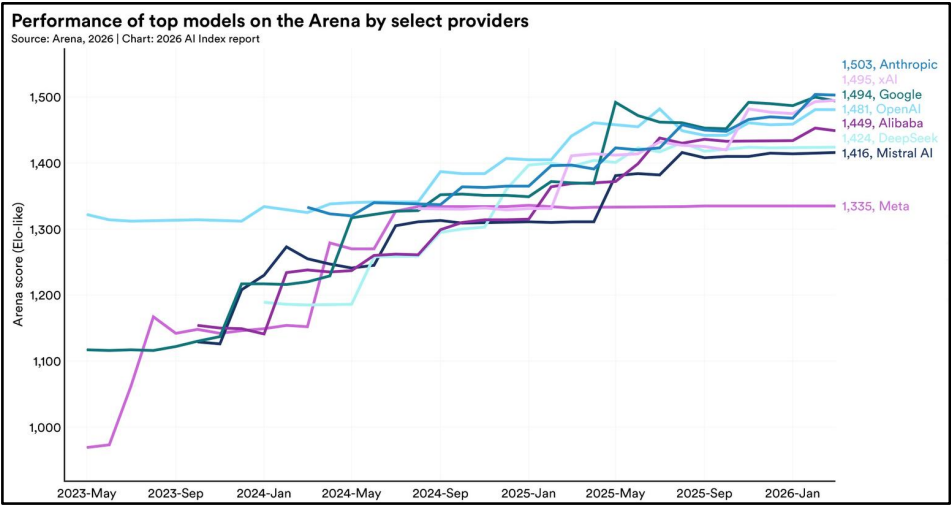
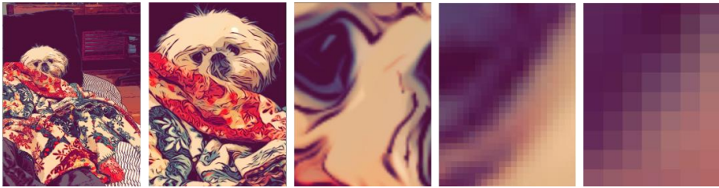
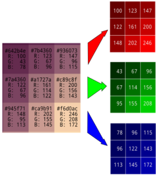

0.1 Définition et histoire de l'intelligence artificielle
Qu'est-ce que l'IA ?
L'Intelligence Artificielle (IA) est un système capable d'apprendre et d'adapter son comportement en fonction des expériences. Le système se compose principalement d'une formule mathématique, qui permet de prédire une réponse en fonction d'une entrée.
Un programme d'entraînement compare les prédictions de la formule avec la réalité, puis déclenche un ajustement automatique en fonction de la précision des réponses précédentes. On dit que le programme ajuste les paramètres et les poids de la formule mathématique.
Plus concrètement : une IA apprend par essai-erreur répétés, exactement comme un enfant.
Exemple 1 :
Imaginez qu'on montre à une IA mille photos de chats et de chiens, en lui indiquant à chaque fois : "Ceci est un chat" ou "Ceci est un chien". À la première photo, l'IA fait une hypothèse complètement aléatoire : "C'est... un chien ?" Mais c'est faux. L'IA détecte son erreur, puis ajuste légèrement ses paramètres ou poids. À la deuxième photo, elle fait une meilleure hypothèse. À la centième photo, elle commence à reconnaître les oreilles des chats. À la millième, elle atteint une meilleure précision. Plus on lui montre de photos, plus elle devient forte.
Exemple 2 :
Imaginez qu'on montre à une IA des milliers de conversations humaines normales. Chaque fois, on lui demande : "Prédis le mot suivant de cette phrase."
On lui présente par exemple : « Bonjour, comment ça... » À la première tentative, l'IA fait une hypothèse aléatoire : « Bonjour, comment ça marche ? » Mais la vraie réponse dans la conversation était « va ». C'est faux. L'IA détecte son erreur et ajuste ses paramètres. À la 10ème tentative sur une phrase similaire, elle prédit mieux. À la 100ème fois qu'elle voit ce schéma, elle commence à comprendre que « comment ça » est suivi très souvent par « va ».
Techniquement, l'IA contient une formule mathématique complexe avec des milliers ou des millions de réglages internes, les "poids". Chaque erreur déclenche un calcul mathématique qui ajuste légèrement ces réglages. Ce processus s'appelle la rétropropagation un système de correction d'erreurs automatisé qui modifie les poids pour réduire l'erreur.
C'est cette capacité d'apprentissage continu, sans qu'un humain ait à intervenir, qui fait toute la différence avec un programme classique.
IA versus programme informatique classique
Un programme informatique classique repose sur une logique déterministe : le développeur définit, en amont, un ensemble de règles et d'instructions précises que la machine doit suivre pour chaque situation possible. Chaque étape du raisonnement est explicite, codée noir sur blanc, et le programme se contente de l'exécuter fidèlement. Ainsi, pour une même donnée en entrée, le résultat produit sera toujours strictement identique. C'est le cas, par exemple, d'un logiciel de déclaration d'impôts : celui-ci applique mécaniquement des formules et des seuils fixés par la loi pour calculer un montant, sans jamais dévier de la règle programmée.
L'intelligence artificielle, à l'inverse, ne suit pas de règles préétablies : elle apprend à partir de données, en repérant des régularités, pour produire des résultats par elle-même, selon une logique probabiliste plutôt que strictement logique.
Histoire et chronologie de l'IA
Les premières recherches importantes commencent dans les années 1950. Alan Turing se demande si une machine peut imiter l’intelligence humaine. Les premiers programmes savent résoudre des problèmes de logique, jouer aux échecs ou traduire des phrases simples. Ils fonctionnent grâce à des règles programmées à l’avance : « si ceci se produit, alors faire cela ».
Dans les années 1970 et 1980, les systèmes experts apparaissent. Ils reproduisent les connaissances d’un spécialiste. Par exemple, le système médical MYCIN pouvait assister les médecins dans le diagnostic et le traitement des maladies infectieuses du sang. Dans l’industrie, d’autres systèmes permettaient de trouver l’origine d’une panne en posant des questions sur une machine. Ces systèmes restaient cependant limités, car ils ne savaient pas réellement apprendre seuls.
À partir des années 1990 et 2000, l’IA progresse grâce à des ordinateurs plus puissants. L’apprentissage automatique permet aux machines d’apprendre à partir d’exemples. Par exemple, des réseaux de neurones ont été utilisés pour reconnaître automatiquement des chiffres manuscrits sur des chèques ou des codes postaux. (Article du National Library of Médicine, site du gouvernement américain : pubmed.ncbi.nlm.nih.gov)¹. En 1997, l’ordinateur Deep Blue bat le champion d’échecs Garry Kasparov.
Depuis les années 2010, les réseaux de neurones artificiels permettent de grandes avancées. Ils analysent les informations en plusieurs étapes : une IA peut ainsi repérer des formes dans une image, puis reconnaître un objet. (Des chercheurs testent un comptage automatisé de poisson via IA, lemag)². Elle est aussi utilisée pour la traduction automatique, les assistants vocaux, les recommandations de vidéos et l’aide au diagnostic médical.
Aujourd’hui, les IA génératives peuvent créer du texte, des images, de la musique ou du code. Les recherches portent notamment sur les IA capables d’effectuer plusieurs étapes seules, par exemple rechercher des informations, utiliser un logiciel ou aider à programmer. En France et en Europe, des acteurs comme Mistral AI, Hugging Face, Inria, le CNRS et le CEA participent à leur développement.
L’Union européenne a également mis en place l’AI Act, un règlement qui encadre l’utilisation de l’IA selon son niveau de risque. Il vise notamment à protéger les citoyens, renforcer la transparence et interdire certaines pratiques dangereuses³.
¹ S. Knerr, L. Personnaz, G. Dreyfus, “Handwritten digit recognition by neural networks with single-layer training”, 30 November 1992 https://ieeexplore.ieee.org/document/165597
² Le MAG, Olivier Blot, “IA et caméras pour compter les poissons des grands fonds”, 09/06/2025, https://lemag.ird.fr/fr/ia-et-cameras-pour-compter-les-poissons-des-grands-fonds
³ European Comission, 30 July 2024, “AI Act” https://digital-strategy.ec.europa.eu/en/factpages/ai-act
Evolution récente des performances

Les performances des modèles d’IA ont fortement augmenté au cours de ces 3 dernières années. Les plus performants se sont fortement rapprochés au sommet du classement Arena : alors qu’OpenAI dominait nettement au début de 2023, l’écart s’est réduit avec les autres acteurs. Le score Arena correspond à une note obtenue grâce à des comparaisons entre modèles : des utilisateurs évaluent les réponses produites par plusieurs IA, puis un système de classement inspiré des échecs attribue davantage de points aux modèles qui remportent le plus souvent ces confrontations.
0.2 Panorama des grandes familles de technologies IA
Les grands modèles de langage (LLM)
Un LLM (Large Language Model) applique le schéma décrit précédemment, chaque mot est converti en tokens, puis en nombre¹. Ces nombres traversent une architecture Transformer comportant plusieurs milliards de paramètres, qui produit en sortie une prédiction du token suivant le plus probable. L'apprentissage se fait sur de la donnée issue d'ouvrages, d'articles et de contenus web. ChatGPT (OpenAI), Claude (Anthropic) et Mistral (Mistral AI) sont des LLM.
Les réseaux de neurones convolutifs (CNN)
Le Convolutional Neural Network s'applique à l'image, chaque pixel devient une valeur numérique (matrice RGB)¹,², qui traverse des couches de convolution détectant d'abord des motifs simples (contours, formes) puis des éléments plus complexes (yeux, oreilles, objets), pour aboutir à une prédiction. Ces modèles équipent aujourd'hui la reconnaissance faciale, le diagnostic médical par imagerie ou la détection d'objets pour les véhicules autonomes.


L'IA générative au-delà du texte
Les modèles de diffusion (DALL-E, Midjourney, Stable Diffusion) suivent la même logique, une description textuelle est convertie en tokens, qui guident la génération d'une image ou audio. Sur l'audio, deux directions existent : la synthèse vocale (texte → voix, ex. Google Assistant) et la transcription (voix → texte, ex. Whisper d'OpenAI²).
L'IA prédictive et analytique
Ces modèles de prédictions prédisent une valeur numérique à partir de patterns historiques. La prévision météorologique illustre bien la puissance de cette approche : le modèle GraphCast de DeepMind, entraîné sur quatre décennies de données météorologiques, prédit désormais les températures, la trajectoire des cyclones et les événements extrêmes sur 10 jours en moins d'une minute.
L'apprentissage par renforcement
Le Reinforcement Learning n'a pas de données à l'avance, le modèle apprend par essai-erreur, guidé par un système de récompense/pénalité. C'est ce principe qui a permis à AlphaGo d'apprendre le jeu de Go en s'affrontant lui-même³.
¹ Brandon Rohrer, “How to Convert a Picture to Numbers”, November 13 2019, https://brandonrohrer.com/images_to_numbers.html
² Wikipédia, “Whisper (système de reconnaissance vocale)”, 13 mai 2026, https://fr.wikipedia.org/wiki/Whisper_(syst%C3%A8me_de_reconnaissance_vocale)
³ Wikipédia, AlphaGo", 22 mars 2026, https://fr.wikipedia.org/wiki/AlphaGo
Cas d'usages
| Secteur | Type d'IA | Exemple |
|---|---|---|
| Santé & sciences | CNN / IA prédictive | Diagnostic médical assisté par imagerie, détection de cancers |
| Santé & sciences | Deep learning (réseaux de neurones) | Découverte de médicament, AlphaFold (DeepMind) : prédiction de structures protéiques |
| Finance & assurance | IA prédictive/analytique | Détection de fraude, scoring en temps réel des transactions bancaires |
| Finance & assurance | Reinforcement Learning | Trading, ajustement dynamique de portefeuilles selon les signaux de marché |
| Industrie & logistique | IA prédictive | Maintenance, anticipation des pannes machines à partir de capteurs IoT |
| Météorologie | IA prédictive (deep learning) | Prévision climatique, GraphCast (DeepMind) : prévision de température à 10 jours |
| Entreprises & services | LLM / agents IA | Automatisation, Mistral AI : ingénieurs qui « managent des agents IA »⁴ |
| Créatif & médias | Modèles de diffusion | Génération d’image, Midjourney, DALL-E pour la production visuelle |
⁴ Youtube LCP, Assemblée nationale, Arthur Mensch, audition Assemblée nationale, 12/05/2026, https://www.youtube.com/watch?v=kKWOkWv6pJM